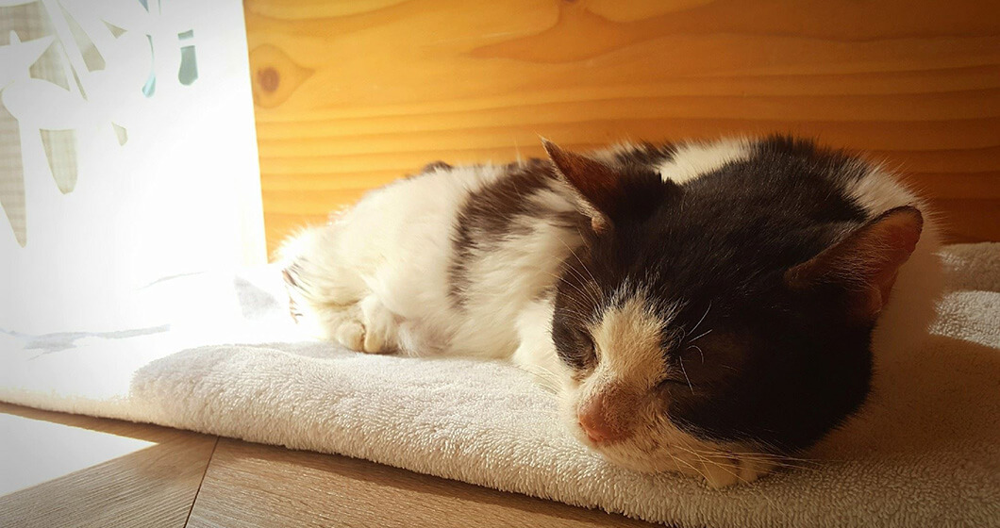
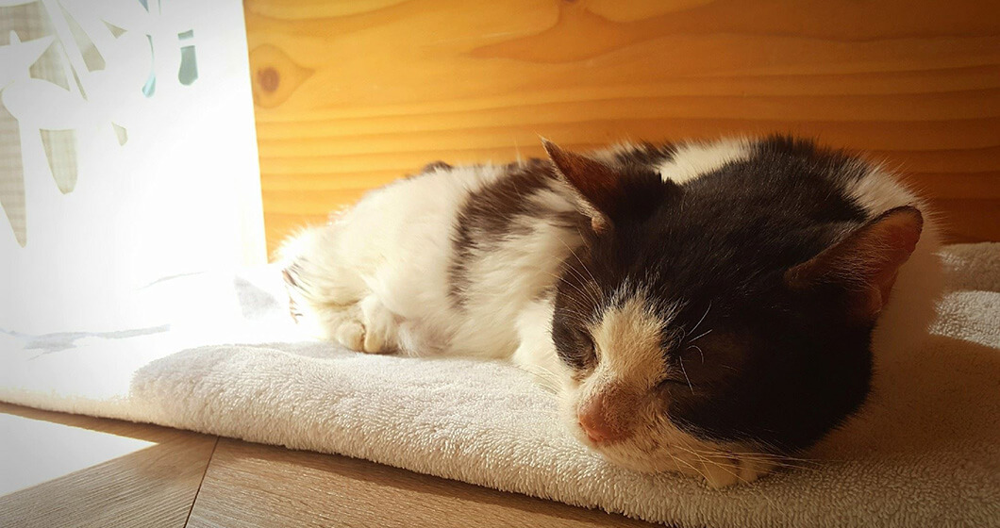

 
2023-06-27
毛孩夏日寄生蟲預防照顧
炎熱的夏季來臨，很多狗狗貓貓會跟著親愛的主人一起出遊，去戶外親近大自然，或到溪河邊戲水，但要注意的是，暴露於戶外環境可能會增加感染寄生蟲的風險，以下是飼主平常可以注意的事項：
一、注意外寄生蟲的存在
常見的外寄生蟲如跳蚤和壁蝨通常可以直接在寵物的毛皮上看到，所以在幫寵物梳毛時可以多加留意。而跳蚤和壁蝨的叮咬不僅會造成傷口，跳蚤大便留在寵物的皮膚上也可能引起過敏和皮膚炎等問題。如果你發現寵物受到寄生蟲侵擾，除了給予驅蟲藥（如蚤不到、全能狗Ｓ）外，若皮膚有脫毛、紅腫、化膿等症狀，最好還是帶寵物去看醫生，以確保沒有其他狀況存在。另外，當你發現壁蝨叮咬時，因為它們的口器會直接插進皮膚中，建議不要自行嘗試移除蟲體，否則可能會引起更大的發炎反應。
二、留意大便中的寄生蟲
我們也應該定期留意我們寵物的大便，看看是否有蟲卵或成蟲存在。有些寄生蟲如蛔蟲、絛蟲，他們的成蟲可能可以直接在大便中看到。如果你發現這樣的情況，請及時就診並開始服用驅蟲藥物。
三、心絲蟲的傳播和症狀
心絲蟲是通過蚊子叮咬傳播的，因此我們需要注意環境的驅蚊工作，同時也要定期吃藥預防。心絲蟲成蟲會堵塞在寵物的右心房中，造成血液循環障礙，這可能導致狗狗貓貓出現呼吸急促、無精打采、運動不耐等症狀。如果你注意到這些症狀，請盡快帶寵物去看醫生進行檢查和治療。
四、鉤端螺旋體的傳播和嚴重後果
鉤端螺旋體是一種細菌，可藉由尿液和溫暖潮濕的環境傳播。感染鉤端螺旋體初期可能會觀察到精神食慾急劇下降、排尿異常等症狀，嚴重者可能導致腎衰竭、肝衰竭、胰臟炎等多重器官發炎，甚至引起肺出血、導致動物死亡。因此，我們平常最好盡量避免讓寵物接觸水邊或泥濘的土壤環境，以減少感染的風險。
五、定期預防和就醫的重要性
為了保護我們的愛寵，定期的寄生蟲預防非常重要。飼主應該遵循獸醫的建議，給予寵物定期的驅蟲藥物，以預防寄生蟲感染。同時，如果你發現寵物出現異常症狀或懷疑寄生蟲感染，請立即帶寵物去看醫生進行檢查和治療，及早的預防和治療可以保護寵物的健康和幸福。
謝謝您的閱讀，希望這份衛教文宣能夠幫助您更好地照顧您的狗狗和貓貓，在夏日享受健康快樂的時光。